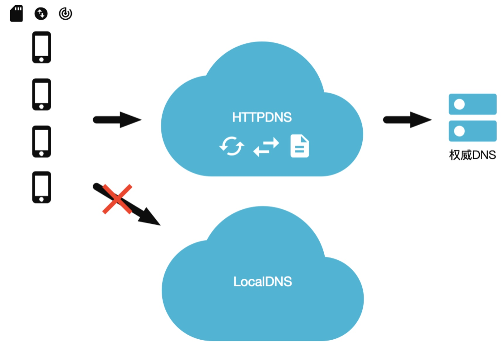
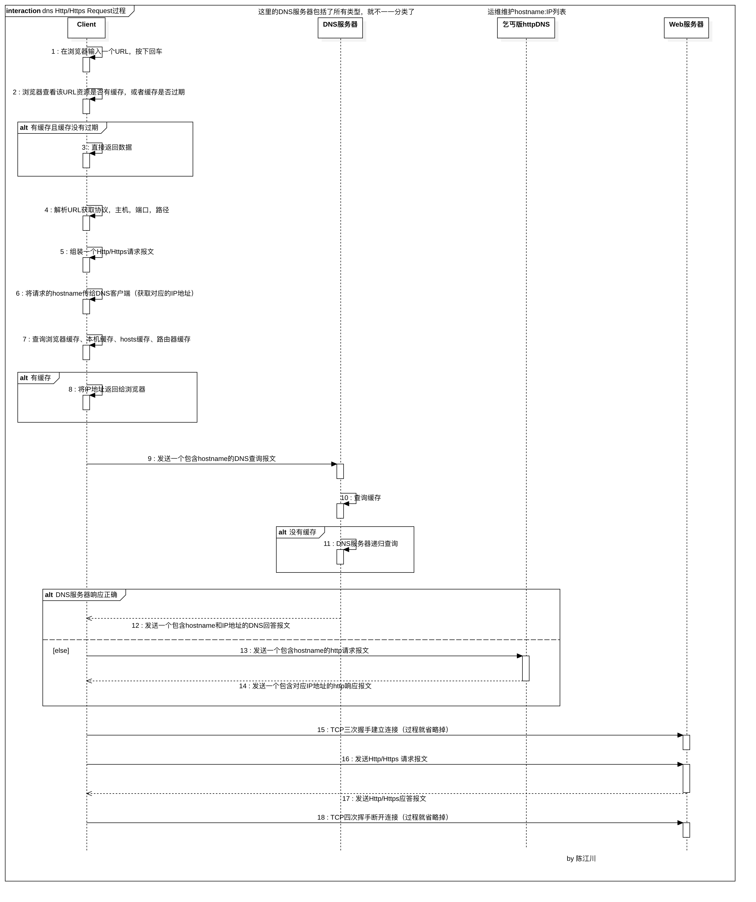

DNS解析方案
公司前些时候遇到一个问题：哈尔滨市的用户进入APP，页面数据加载不了，提示网络错误。开始以为是运营商的DNS服务器被劫持了，但细想如果是被劫持，那应该会加载劫持者指定的IP地址的数据，要不然毫无意义。
后来和ISP联系，了解到解析哈尔滨市的权威DNS服务器物理地址迁移了（导致IP地址发生变更），但没有及时更新TLD服务器中的该台权威DNS服务器的A记录（猜测，目前不确定），在“DNS概念 - 如何在DNS数据库中插入记录”有介绍。
现在主流使用httpDNS来解决上面的问题，但考虑到money的问题（公司没有重视DNS解析的问题，只要确保DNS解析失败后，能切换IP直连）。因此有了这个方案（各位可以给出建议便于完善方案）。
Http/Https请求分析
在DNS概念中简单的描述了一个Http/Https请求的过程，现在给出一个稍微详细的请求过程时序图：

为什么要特意说这个？我们得知道整个流程，才能确定哪个环节出问题。哈尔滨用户出现的问题可以确定是在第9、10、11步发生的，因为此时的权威DNS服务器的IP地址是错误的，所以发送的DNS查询报文是没有响应的。
如何解决这个问题呢？继续看。
乞丐版httpDNS设计
httpDNS实际上替换了LocalDNS（本地DNS服务器）的功能，httpDNS通过IP直接请求HTTP获取服务器的A记录。如果使用第三方的httpDNS服务，上述的问题就可以解决了，因为不可抗拒因素（公司不重视），所以httpDNS提供的功能只能自己实现。
先给一张图，大概描述了httpDNS的功能：

我们知道无论使用传统的DNS还是httpDNS，最终都是将hostname（域名）对应的IP地址返回给客户端。对应公司运维来说，公网服务器的IP地址和其对应的hostname都是已知的，我们可以把这些记录保存在本地，当DNS解析失败时，使用IP直连。
